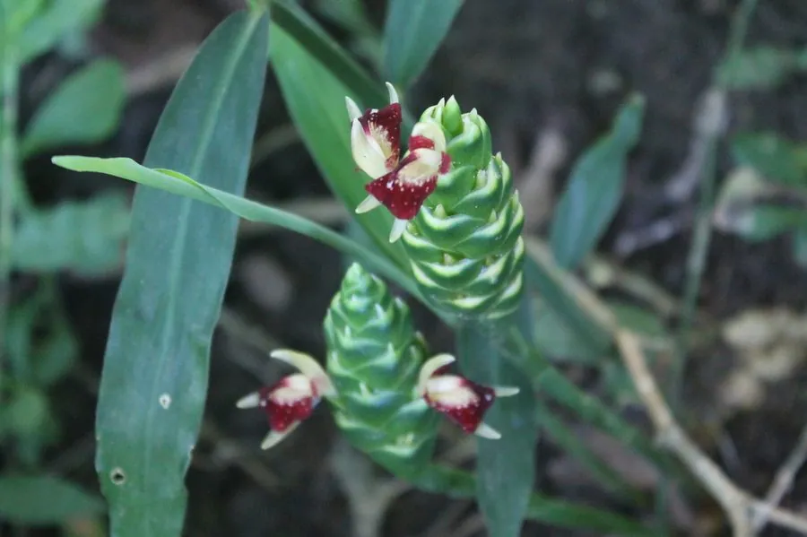

农作物与经济植物 · 植物界
姜 Zingiber officinale

姜的地下根茎辛辣芳香，既是重要的调味料，也是常用中药材，可去腥增香、温中散寒，栽培历史逾两千年。
- 分类
- 门被子植物门纲单子叶植物纲目姜目科姜科属姜属
- 栖息环境
- 热带、亚热带温暖湿润的沙壤土，喜温暖、不耐霜冻
- 地理分布
- 原产东南亚，现主产于中国、印度、尼日利亚、印尼等地
- 保护级别
- 暂无评估（栽培作物）
物种志
姜是姜科多年生草本，株高 0.5–1 m，根状茎肉质、肥厚，呈不规则块状，表面淡黄色，有芳香辛辣味。叶片披针形，二列互生，叶鞘抱茎。花通常不开，穗状花序由根状茎抽出，苞片绿色或紫红色，花冠黄绿色。生产上多用根状茎（姜块）无性繁殖。
姜原产东南亚热带地区，中国栽培历史已有 2000 多年，是重要的调味与药用作物。它喜温暖湿润、半阴环境，不耐霜冻，适宜在疏松肥沃的沙壤土中种植，用姜块催芽后播种。嫩姜可腌制、炒食，老姜辛辣味浓，是烹饪去腥增香的主要调料；姜还可加工成姜粉、姜油、姜糖和姜茶。中医认为生姜有发汗解表、温中止呕之效。中国山东、河南、四川、贵州等地是主产区。
形态与习性
- 株高0.5–1 m
- 根状茎肉质肥厚，芳香辛辣
- 叶披针形，二列互生
- 繁殖用姜块无性繁殖
- 用途调味、姜粉、姜糖与姜茶
- 药用发汗解表、温中止呕
趣味知识
- 姜的辛辣味来自姜辣素，老姜的辣味比嫩姜更浓。
- 姜不仅是调味料，中医还用它来发汗解表、温中止呕。
- 姜很少开花，生产上主要用姜块进行无性繁殖。